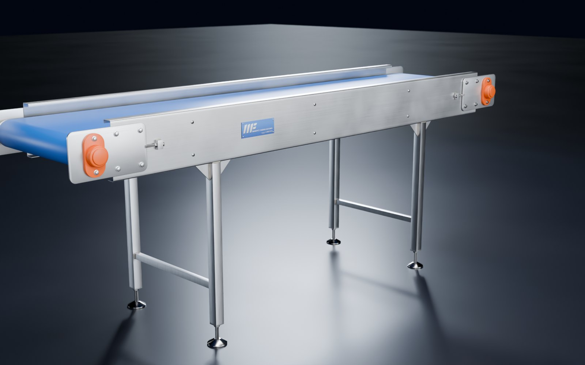
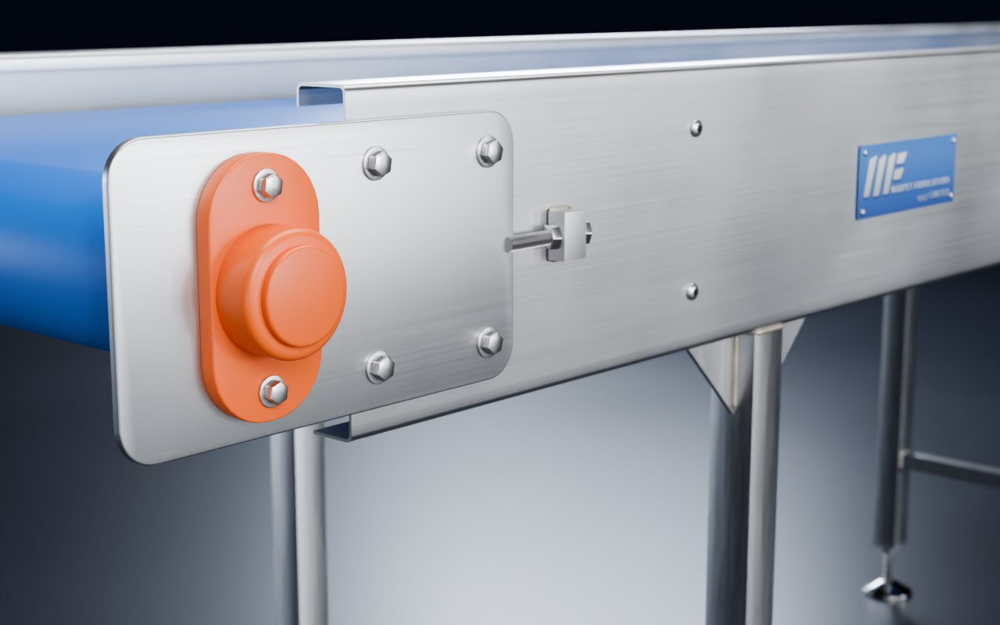
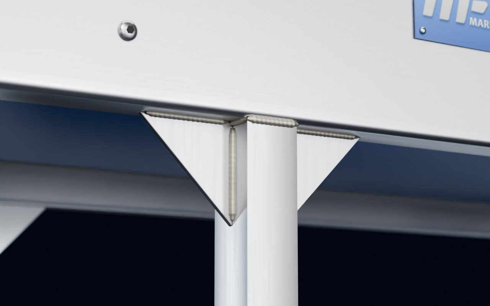

Development notes/Realism test
Realism test
One Blender master model, shown two ways: rendered offline as the benchmark, and running live in Three.js. The homepage, its layout and its copy are unchanged.
Interactive
Turn it, zoom it, build it
Loading model
Drag to rotate. Scroll or pinch to zoom. The slider scrubs the assembly in either direction.
Side by side
Blender Cycles against Three.js, same camera
Each pair uses the same model, camera position, aim, lens, HDRI and lamp positions. Left is rendered offline. Right is drawn live by your browser.
Whole conveyor: reflections and overall light

Drive end: surface texture, bends, fasteners and take-up

Leg joint: welds, gussets and shadow under the frame

Diagnosis
Why the first Three.js version looked flat
| Cause | What was wrong | What changed |
|---|---|---|
| No occlusion | Every surface reflected the full studio, even inside joints and under the frame. | Ambient occlusion baked in Blender into the model, one part at a time so nothing ghosts during assembly. |
| No grounding | One hard shadow map and a floor that could not reflect. | Two soft shadow maps, contact shadows that follow moving parts, a pool of light, and a soft reflection near the machine on desktop. |
| Legs lit like plastic | Bright lamps and a bright studio floor in the reflections turned the legs flat white. | Lamps cut to shadow-casting only. The reflected environment now includes the dark floor. |
| Lost surface detail | Blender's procedural grain, scratches and smudges do not export to GLB. | A single 4096 px roughness texture mapped once across the whole side panel, with anisotropic highlights. |
| Wrong light levels | I had the HDRI five times too bright and the lamps sixteen times too bright. | HDRI at Blender's strength, plus a light card for each Blender lamp at the same position, size and output. |
| Heavy, unmerged model | 418 separate parts, 370,000 triangles, 2.7 MB. | 13 merged parts, 112,000 triangles, 1.26 MB (0.65 MB compressed). A simplified phone version was tried and rejected: it faceted the side panel. |
What real time still cannot match
| Light between parts | Cycles bounces light between the frame, legs and floor. Three.js lights each surface from the studio alone. |
|---|---|
| Blurred reflections of nearby objects | The Cycles floor shows a soft reflection that fades with distance. The Three.js mirror is sharp and even. |
| Depth of field and fine grain | Cycles has lens blur and sub-pixel brushing. Three.js is sharp everywhere and its grain is a texture. |
Reference
Material needed from Marpet
- Three-quarter, side-on, end-on and plan photographs of one complete conveyor, taken from the same distance
- Close-ups of the drive end, tail end, a leg foot, a frame joint and a finished weld
- The drive side: motor, gearbox and how they mount. No current photograph shows it clearly, so none is modelled
- Underside and belt return, including any support rollers
- Belt type per conveyor: flat PU belt or modular plastic belt, colour and pitch
- Overall length, width and belt height, sheet thickness, leg section size, fastener sizes
- A general arrangement drawing or CAD export (STEP) if one exists. This replaces most of the list above
- The steel finish specified (for example 2B, or brushed to 240 grit) and a straight-on photograph of a clean panel in daylight
- Which conveyor Marpet wants shown, and confirmation it may be shown